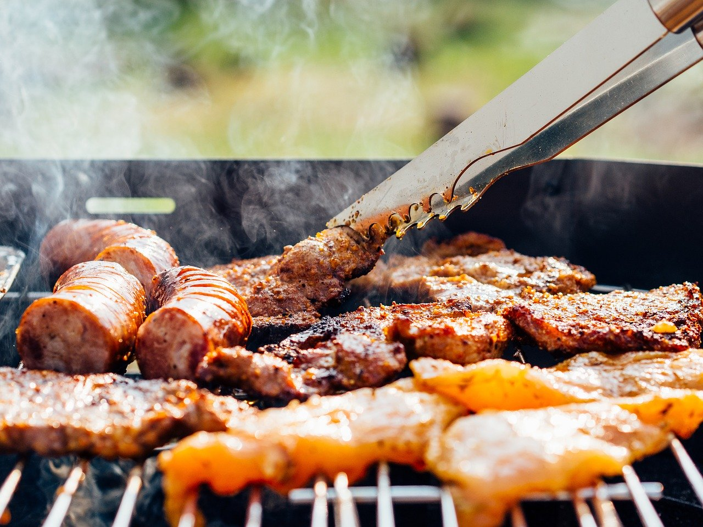

Descubre el sabor intenso de nuestra Keperi al Horno, una delicia gourmet que combina la ternura de la carne con especias seleccionadas. Nuestro secreto? Un toque de amor en cada porción. ¡Prueba la perfección en cada bocado!
Mas Detalles
Sabor a tradición en cada mordida. Nuestro Chancho al Horno es una obra maestra de la cocina, con una carne suave y jugosa, acompañada de una crujiente capa exterior. ¡Un clásico que nunca pasa de moda!
Mas Detalles
¡La esencia de la carne argentina! Nuestro Churrasco es una experiencia gastronómica que te llevará a la parrilla. Cortes selectos, cocinados a la perfección, con un sabor ahumado que te dejará sin aliento. ¡No te pierdas este placer culinario!
Mas Detalles